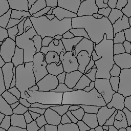
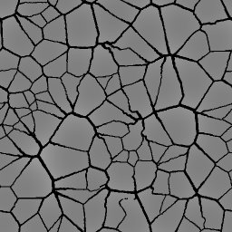

produit des hexagones, plus ou
moins réguliers. Si vous désirez des cellules
rectangulaires, vous pouvez utiliser plutôt le "crayon de
failles"
produit des hexagones, plus ou
moins réguliers. Si vous désirez des cellules
rectangulaires, vous pouvez utiliser plutôt le "crayon de
failles"  , en réglant la
différence d'altitude à 0 et en dessinant des crevasses
perpendiculaires puis parallèles. dans la boîte à
outils, vous obtenez ce dialogue d'options:
, en réglant la
différence d'altitude à 0 et en dessinant des crevasses
perpendiculaires puis parallèles. dans la boîte à
outils, vous obtenez ce dialogue d'options:
|
Un terrain utilisé comme source de bruit perturbe localement les craquelures selon la valeur de l'altitude. De gauche à droite, l'exemple montre ce qui est produit par un niveau de bruit de 0, 50 et 100. |
|
 |
 |
Quand l'option "guide" est utilisée, les valeurs d'altitude reçoivent un poids plus grand qu'avec l'option "bruit". Cette option donne des résultats plus évidents avec un terrain qui montre des transitions abruptes entre les zones claires et foncées. Ces transitions deviennent des "clôtures". Une case à cocher permet d'utiliser un terrain secondaire pour ajouter du bruit aux craquelures composant l'arrière-plan uniforme. Ce terrain est de type "subdivision 1". La racine et le niveau de relief peuvent être contrôlés. |
|
 |
|
 |
 |
Fixed width, 1 / 2 / 4 (512x512) |
 |
| Variable width, from 2 to 6 (512x512)  |
 |

 et écrivez votre texte avec
un petit crayon continu
et écrivez votre texte avec
un petit crayon continu  à son niveau maximal. Avec
un terrain de 512x512, la grandeur la plus petite
(un rayon de 2) donne le meilleur résultat.
à son niveau maximal. Avec
un terrain de 512x512, la grandeur la plus petite
(un rayon de 2) donne le meilleur résultat. ..
.. pour réduire l'intervalle
de valeurs de gris, coupant ainsi le flou, puis l'outil
"luminosité / constraste"
pour réduire l'intervalle
de valeurs de gris, coupant ainsi le flou, puis l'outil
"luminosité / constraste"  pour élever le contraste au maximum à l'aide du bouton
"automatique".
pour élever le contraste au maximum à l'aide du bouton
"automatique". Retour à
l'index de la documentation
Retour à
l'index de la documentationContact:
Patrice St-Gelais